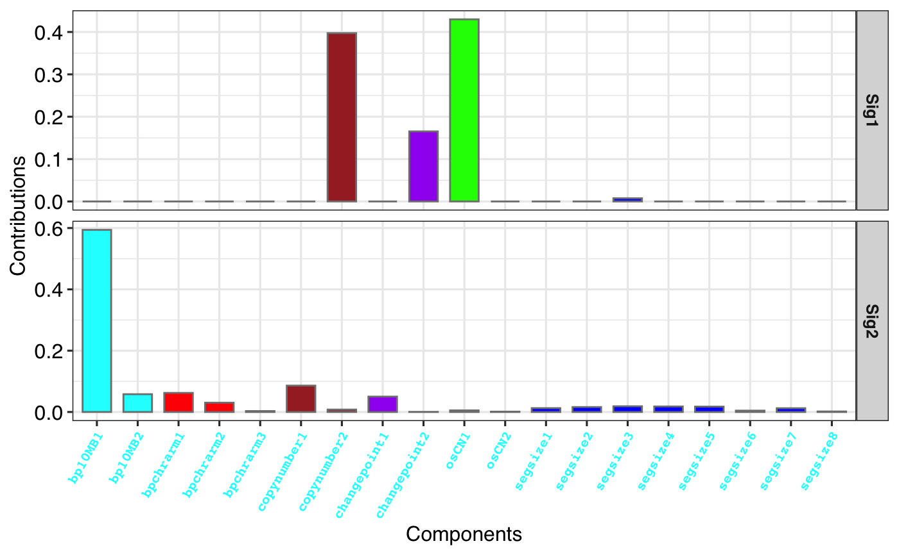
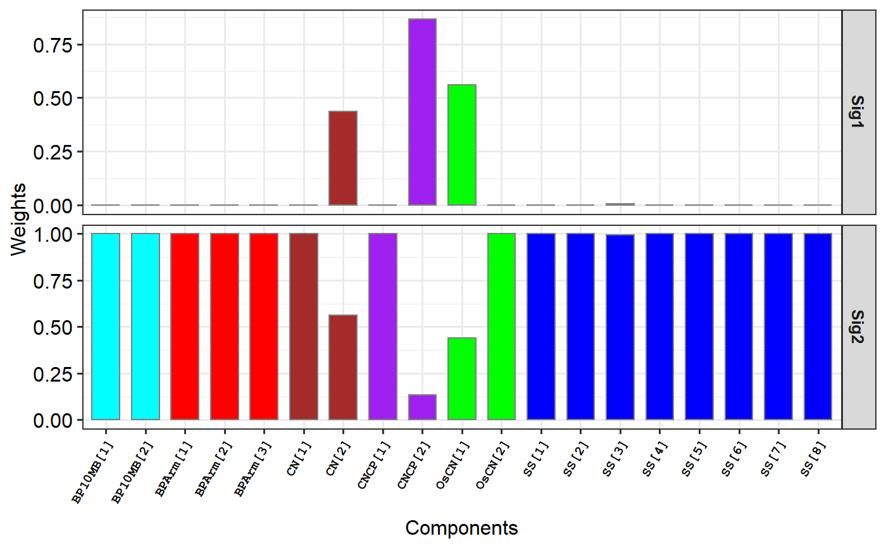
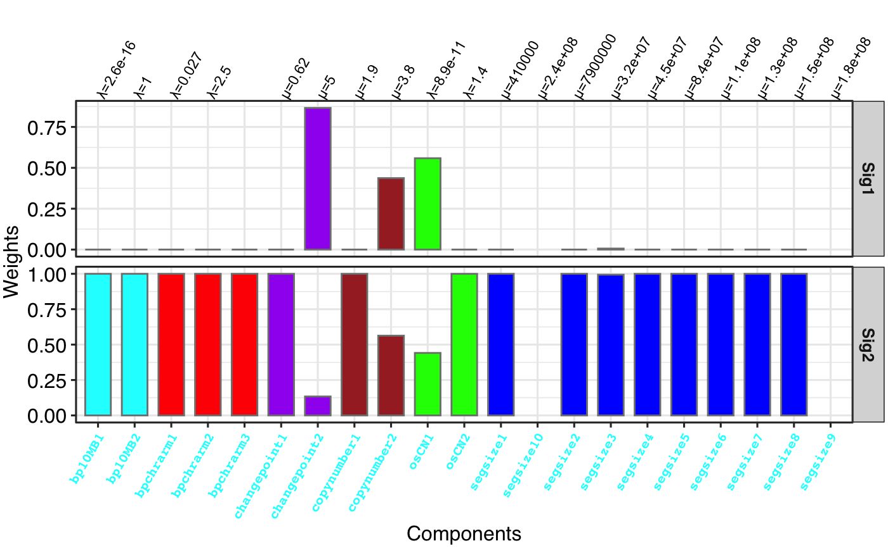

Who don't like to show a barplot for signature profile? This is for it.
show_sig_profile( Signature, mode = c("SBS", "copynumber"), method = "Wang", normalize = c("row", "column", "raw", "feature"), filters = NULL, feature_setting = sigminer::CN.features, style = c("default", "cosmic"), palette = use_color_style(style), set_gradient_color = FALSE, free_space = "free_x", rm_panel_border = style == "cosmic", rm_grid_line = FALSE, bar_border_color = ifelse(style == "default", "grey50", "white"), bar_width = 0.7, paint_axis_text = TRUE, x_label_angle = 60, x_label_vjust = 1, x_label_hjust = 1, x_lab = "Components", y_lab = "auto", params = NULL, show_cv = FALSE, params_label_size = 3, params_label_angle = 60, y_expand = 1, digits = 2, base_size = 12, font_scale = 1, sig_names = NULL, sig_orders = NULL, check_sig_names = TRUE )
Arguments
| Signature | a |
|---|---|
| mode | signature type for plotting, now supports 'copynumber' or 'SBS'. |
| method | method for copy number feature classfication in sig_tally, can be one of "Macintyre" ("M") and "Wang" ("W"). |
| normalize | one of 'row', 'column', 'raw' and "feature", for row normalization (signature), column normalization (component), raw data, row normalization by feature, respectively. Of note, 'feature' only works when the mode is 'copynumber'. |
| filters | a pattern used to select components to plot. |
| feature_setting | a |
| style | plot style, one of 'default' and 'cosmic', works when
parameter |
| palette | palette used to plot when |
| set_gradient_color | default is |
| free_space | default is 'free_x'. If "fixed", all panels have the same size. If "free_y" their height will be proportional to the length of the y scale; if "free_x" their width will be proportional to the length of the x scale; or if "free" both height and width will vary. This setting has no effect unless the appropriate scales also vary. |
| rm_panel_border | default is |
| rm_grid_line | default is |
| bar_border_color | the color of bar border. |
| bar_width | bar width. By default, set to 70% of the resolution of the data. |
| paint_axis_text | if |
| x_label_angle | font angle for x label. |
| x_label_vjust | font vjust for x label. |
| x_label_hjust | font hjust for x label. |
| x_lab | x axis lab. |
| y_lab | y axis lab. |
| params | params |
| show_cv | default is |
| params_label_size | font size for params label. |
| params_label_angle | font angle for params label. |
| y_expand | y expand height for plotting params of copy number signatures. |
| digits | digits for plotting params of copy number signatures. |
| base_size | overall font size. |
| font_scale | a number used to set font scale. |
| sig_names | set name of signatures, can be a character vector.
Default is |
| sig_orders | set order of signatures, can be a character vector.
Default is |
| check_sig_names | if |
Value
a ggplot object
Examples
# Load SBS signature load(system.file("extdata", "toy_mutational_signature.RData", package = "sigminer", mustWork = TRUE )) # Show signature profile p1 <- show_sig_profile(sig2, mode = "SBS") p1# Load copy number signature from method "W" load(system.file("extdata", "toy_copynumber_signature_by_W.RData", package = "sigminer", mustWork = TRUE )) # Show signature profile p2 <- show_sig_profile(sig, style = "cosmic", mode = "copynumber", method = "W", normalize = "feature" ) p2# Load copy number signature from method "M" load(system.file("extdata", "toy_copynumber_signature_by_M.RData", package = "sigminer", mustWork = TRUE )) # Show signature profile # The 'column' normalization is consistent with # original paper p3 <- show_sig_profile(sig, paint_axis_text = FALSE, mode = "copynumber", method = "M", normalize = "column" ) p3# Add params label # ================= # Load copy number prepare object load(system.file("extdata", "toy_copynumber_tally_M.RData", package = "sigminer", mustWork = TRUE )) params <- get_tidy_parameter(cn_tally_M$components) p4 <- show_sig_profile(sig, mode = "copynumber", method = "M", normalize = "column", params = params, y_expand = 2 ) p4#> Warning: conversion failure on ' 位=2.6e-16' in 'mbcsToSbcs': dot substituted for <ce>#> Warning: conversion failure on ' 位=2.6e-16' in 'mbcsToSbcs': dot substituted for <bb>#> Warning: conversion failure on ' 位=1' in 'mbcsToSbcs': dot substituted for <ce>#> Warning: conversion failure on ' 位=1' in 'mbcsToSbcs': dot substituted for <bb>#> Warning: conversion failure on ' 位=0.027' in 'mbcsToSbcs': dot substituted for <ce>#> Warning: conversion failure on ' 位=0.027' in 'mbcsToSbcs': dot substituted for <bb>#> Warning: conversion failure on ' 位=2.5' in 'mbcsToSbcs': dot substituted for <ce>#> Warning: conversion failure on ' 位=2.5' in 'mbcsToSbcs': dot substituted for <bb>#> Warning: conversion failure on ' 位=8.9e-11' in 'mbcsToSbcs': dot substituted for <ce>#> Warning: conversion failure on ' 位=8.9e-11' in 'mbcsToSbcs': dot substituted for <bb>#> Warning: conversion failure on ' 位=1.4' in 'mbcsToSbcs': dot substituted for <ce>#> Warning: conversion failure on ' 位=1.4' in 'mbcsToSbcs': dot substituted for <bb>